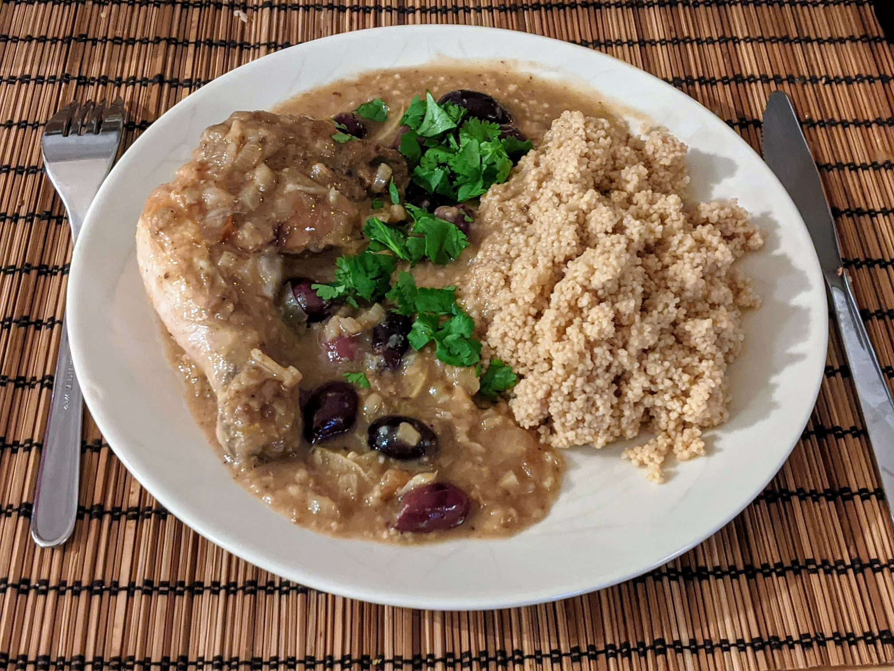

Tajine de poulet au citron

Pour 6 personnes :
- Six cuisses de poulet
- Une cuillère à soupe de graines de cumin
- Deux cuillères à café de graines de coriandre
- Trois grosses cuillères à soupe de farine
- Trois oignons
- Trois gousses d'ail
- Un petit verre de vin blanc
- Un litre de bouillon de poulet ou de légumes
- Un citron confit au sel
- Un citron bio
- Un bocal d'olives, de Kalamata de préférence
- (Facultatif) Un bouquet de persil
- Sel, poivre, huile d'olive
- Chauffer une poêle en fonte à feu moyen-fort. Lorsque c'est bien chaud, faire griller les graines de cumin 30 secondes, puis éteindre le feu et ajouter les graines de coriandre pendant 30 secondes.
- Transvaser le tout dans un pilon, et écraser pour que ça forme une poudre grossière. Mélanger avec la farine, du sel et du poivre dans un petit saladier, et ajouter le poulet pour l'enduire du mélange de tous les côtés.
- Faire chauffer de l'huile d'olive dans la poêle en fonte, et y faire revenir le poulet, jusqu'à ce que ça soit brun des deux côtés ; on peut faire ça en plusieurs fois si la poêle n'est pas assez grosse. Transvaser le tout dans une mijoteuse.
- Pendant ce temps, éplucher et émincer l'oignon et l'ail. Après le poulet, faire revenir l'oignon puis l'ail dans l'huile d'olive. Ajouter le reste de farine quelques minutes, puis déglacer avec le vin et le bouillon.
- Pendant ce temps, enlever la pulpe du citron confit au sel, rincer la peau sous l'eau abondamment, et la couper en tranches bien fines ; et zester le citron frais. Ajouter le tout dans la mijoteuse, avec contenu de la poêle et le reste de bouillon. Faire cuire 5-6 heures à feu doux.
- Quelques minutes avant de servir, presser le citron pour récupérer le jus, laver et émincer le persil, égoutter les olives, et rajouter le tout dans le plat. Servir chaud, avec du couscous et (si on veut) des carottes rôties.
Retour à la liste des recettes